A European brand launched a daily longevity drink for people 40 and older. They had a launch film, a nutrition scientist on camera and a stack of creator clips. I turned that footage into a library of ads built on three things: a scientist who explains, real people with real stories, and AI b-roll and charts that show what happens inside the body. The product never shows up before the story has done its job.
The brand had already paid for a polished launch film, a day of filming with a nutrition scientist and a set of creator videos. All of it looked expensive and none of it stopped the scroll. Ads opened on a pouch and a list of 14 ingredients. People 40 and older don't buy ingredients. They buy the feeling of keeping up with their own life.
A nutrition scientist and former head of nutrition in elite cycling, filmed against a whiteboard. Perfect for explaining, too slow on his own.
Moms, runners, men in their fifties, a woman who turned 49. Raw clips of real mornings, walks and kitchens.
Glowing cells, molecules, organs and simple falling charts, made for each script to show what can't be filmed.
A talking head explaining NAD+ for 36 seconds loses everyone. So I broke each of his takes into single sentences and put something to look at under every one: a chart when he says a number, a molecule when he names it, a research paper when he says "studies". He stays the voice of authority, the visuals carry the attention.
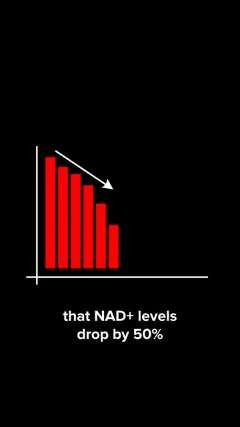
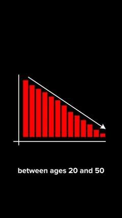
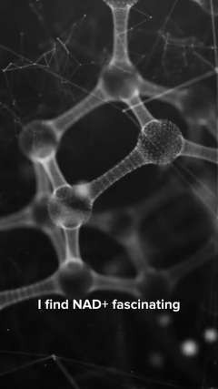
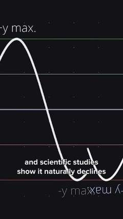
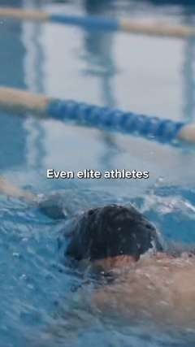
Borrowed credibility. A swimmer and a cyclist open the ad before the scientist says a word about his past in elite sport.
A villain, not a pitch. Close-ups of generic supplement labels under the line, then a lab shot for "every ingredient is dosed exactly".
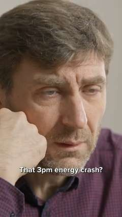
Start where the viewer is. A tired man at his desk, then the scientist explains why, with a falling chart under "my energy was slowly declining".
Robert is an active man in his fifties who has started to feel worn out. The first 20 seconds are only about him: the pickleball court, the tired kitchen, the head in his hands at the laptop, a red AI shot of what fatigue feels like inside and a chart for "it began to affect his focus". The drink comes in at second 21 as the answer. Then the ending shows him back in his life.
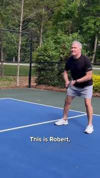
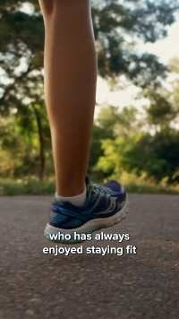
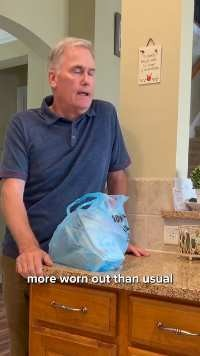
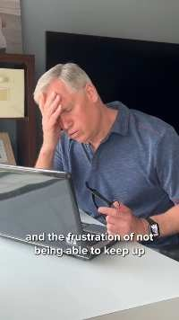
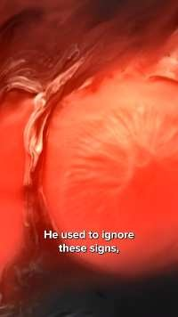
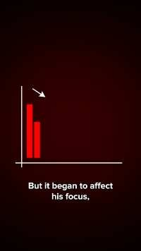
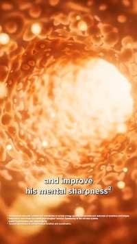
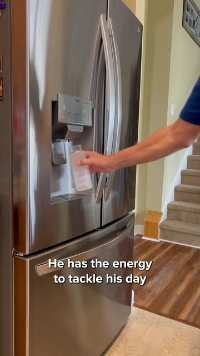
Every format was written for the same person: 40 or older, still active, quietly scared of slowing down. Each script went out in three or four versions with different first lines, so the data could pick the hook.
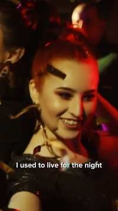
Wild parties, then a chart: "that lifestyle was aging me fast". Then a lab and glowing cells: "the real party is inside your cells".
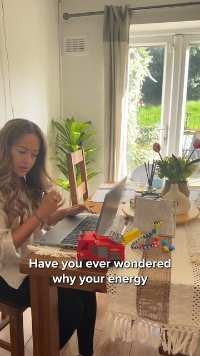
A young mom, a toddler, a laptop and an espresso machine. Exhaustion everyone recognizes.
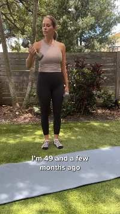
A real age on screen, a walk of 3.5 miles, sleeping well. Then an AI body lighting up: "Now, at 49, I feel better".
Every ingredient gets its own AI visual, so a list becomes a sequence people watch.
"We've been sold on the lie that we need endless pills." One word per cut, gym, track, kitchen, street. Built entirely from b-roll.
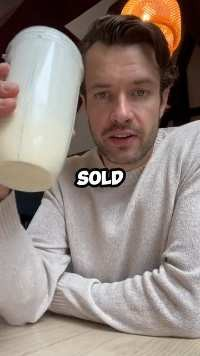
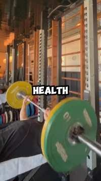
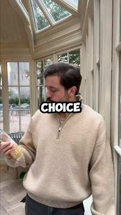
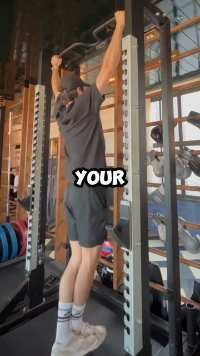
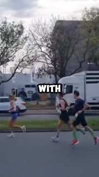
Five takes with the scientist became five ads: NAD+, the 3 PM crash, elite sport, why he changed his mind at 40, and too many pills.
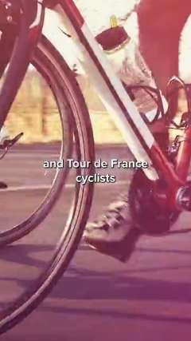
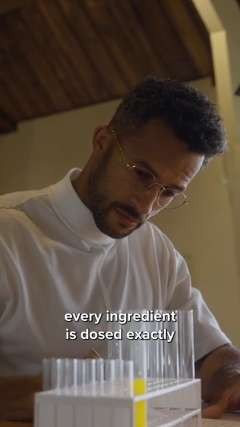
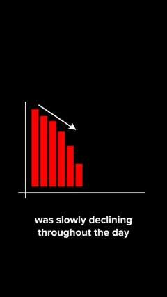
You can't film NAD+ or a tired cell. So every abstract line got a picture. A red bar chart that falls for "drop by 50%". A curve that sinks for "naturally declines". Glowing cells for "cellular health", an orange body for "mental sharpness", a molecule for every ingredient name. Simple enough to read in half a second, strange enough to stop a thumb.
For marketersHealth claims are tightly regulated in Europe. Showing a chart of what science says about aging, then letting the person tell their own story, kept the ads clear without promising results.
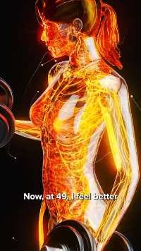
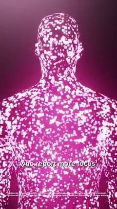
Charts and AI b-roll as they appear inside the finished ads.
I worked month by month from September to December 2025, adding new stories each round and keeping what the client's team wanted more of.
When 16 seconds of story come first, the product feels like relief, not a pitch.
A scientist works when every sentence has its own picture. A chart for a number, a molecule for a name.
"I'm 49", "a man in his fifties". The audience finds itself faster in a number than in an adjective.
For health and supplement brands with a scientist, a launch film or a folder of creator clips that still sells like an ad. I re-edit it into story-first creatives, with charts and AI b-roll where the camera can't go.
Everything you've already shot.
Scripts built on real people and real ages.
Charts and AI b-roll for every claim.
Three to four openings per script.
New languages from the same cut.